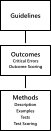
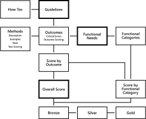

This Explainer accompanies the drafts of the W3C Accessibility Guidelines (WCAG) 3.0.
Status of This Document
This section describes the status of this
document at the time of its publication. A list of current W3C
publications and the latest revision of this technical report can be found
in the W3C technical reports index at
https://www.w3.org/TR/.
This is a first draft of the Explainer. It is not normative (informative) and is not expected to become a W3C Recommendation. It provides background on W3C Accessibility Guidelines (WCAG) 3.0.
Publication as an Editor's Draft does not
imply endorsement by W3C and its Members.
This is a draft document and may be updated, replaced or obsoleted by other
documents at any time. It is inappropriate to cite this document as other
than work in progress.
The current proposal for WCAG 3 is made up of different parts and sections, including:
WCAG3
WCAG3 Explainer
Guideline How-tos
Outcomes
Methods
Functional categories
These parts and sections are inter-related and are continually being refined and updated as more sections are developed. Each publication of WCAG 3 will include updates to some, but not necessarily every part and section. This process will facilitate quarterly updates which provides opportunities for public review and comment throughout the evolution of the guidelines. As a result, the document is a work-in-progress. Content will evolve and there may be changes to layout and style that are not yet reflected in all parts of the present release and will be reflected in future releases. The parts and sections updated in this release are:
First draft of the WCAG3 Explainer which takes explanatory material out of WCAG3 to improve usability.
New conformance section on user generated content and the glossary definition of user generated content.
A new proposal revising the Methods template to address comments from the FPWD. This proposal was done in partnership with the ACT task force.
W3C Accessibility Guidelines (WCAG) 3.0 is a successor to Web Content Accessibility Guidelines 2.2 [WCAG22] and previous versions, but does not deprecate WCAG 2.X. It will also incorporate content from and partially extend User Agent Accessibility Guidelines 2.0 [UAAG20] and Authoring Tool Accessibility Guidelines 2.0 [ATAG20]. These earlier versions provided a flexible model that kept them relevant for over 10 years. However, changing technology and changing needs of people with disabilities have led to the need for a new model to address content accessibility more comprehensively and flexibly. WCAG 3.0 originally had a project name of "Silver", so the original groups working on it and much of the early design work carries that project name.
This Explainer includes:
background information on the development of WCAG 3.0;
goals for WCAG 3.0;
explanation of design decisions;
and differences from the current WCAG 2 guidelines to make it easier for people to understand the changes.
2. Background and development history
The Silver Task Force of the Accessibility Guidelines Working Group and the W3C Silver Community group have partnered to produce the needs, requirements, and structure for the new accessibility guidance. To date, the group has:
The goal of WCAG 3.0 is to provide information that can be used to improve the accessibility of products on a variety of platforms. WCAG 3.0 uses a model that allows it to address more disability needs than WCAG 2.X, as well as address publishing requirements and emerging technologies such as web XR (augmented, virtual and mixed reality) and voice input. It will also provide non-normative (informative) information about the ways web technologies need to work with authoring tools, user agents, and assistive technologies. The WCAG 3.0 model is designed to support better coverage across disabilities and be easier to maintain, so that the new model will be more enduring over time as technologies evolve.
3.1 Goals for Inclusion
The creation process for the guidelines should:
Actively recruit a diverse range of people with disabilities. Review and monitor whether people are included. Periodically evaluate inclusive features of available tooling and procedures.
Facilitate global participation and feedback.
Editor's note
W3C strives to be as inclusive as possible, and has actively sought participation and input from a broad range of stakeholder groups. We recognize, however, that there is always room for improvement in practices to support inclusion and representation. As you evaluate this document, please consider whether there are ways the Working Group can better support your review, feedback, or inclusion within the process of creating this standard. We welcome feedback on this question as part of your comments.
3.2 Goals for Content
Support the needs of a wide range of people with disabilities and recognize that people have individual and multiple needs.
Be flexible enough to support the needs of people with disabilities and keep up with emerging technologies. The information structure allows guidance to be added or removed.
Be written in plain language, as easy as possible to understand. We need a definition of plain language that includes the ease of translation. Ideally, it will be a broadly accepted definition internationally.
Improve the ability to support automated testing where appropriate and provide a procedure for repeatable tests when manual testing is appropriate.
Be data-informed and evidence-based where possible. We recognize that research and evidence are influenced by the number of people with a particular disability, by the size of the body of research, and by the difficulty in capturing data regarding some disabilities or combination of disabilities. The intent is to make informed decisions wherever possible to ensure that the needs of all people with disabilities are prioritized, including needs that differ from the majority. In situations where there is no evidence or research, valid data-gathering methods should be used to obtain and evaluate information from advocacy groups, people with lived experience and other subject matter experts.
Be written so the Guideline content is usable in adaptable and customizable ways. For example, Silver content is available to be extracted by users to adapt to their needs.
3.3 Goals for Conformance
The goals are based on the Silver research, the results from the Silver Design Sprint, and input from the Accessibility Guidelines Working Group, the Silver Task Force and the Silver Community Group.
Better align conformance with the experiences of people with disabilities, and keep in mind that people with different disabilities have different experiences.
Treat the needs of all disabilities equitably.
Support a measurement and conformance structure that includes guidance for a broad range of disabilities. This includes more attention to the needs of low vision and cognitive accessibility, whose needs may not fit the true/false statement success criteria of WCAG 2.x.
Consider the needs of more organizations.
Be user-oriented instead of page-oriented. Think about what the person is trying to do.
Wherever possible, preserve the organization’s investment in training, tooling, and knowledge.
Support the ability for organizations to choose parts of their site or product for conformance (a logical subset of a site or product).
Create a more flexible conformance model that addresses the challenges in applying the 2.x conformance model to large, complex, or dynamic websites and web applications.
Help organizations prioritize things that have a greater impact on improving the experience of people with disability.
Develop a more flexible method of measuring conformance that is better suited to accommodate dynamic or more regularly updated content.
Reduce the burden of “accessibility supported” as an author responsibility, and help developers of authoring tools, browsers, and assistive technologies learn the behaviors that users expect of their products. Note: This goal originated as a suggestion from the Silver Design Sprint. It requires more detailed discussion in AGWG. It does not yet have consensus.
Improve tests so that repeated tests get more consistent results.
Increase the ability to create more automated tests so that the cost of accessibility test could potentially be reduced.
Where possible, do not increase the manual accessibility testing burden.
4. Non-Goals or Out-of-Scope
Non-web emerging technologies (this may change as the charter is clarified)
Normative requirements for platforms, operating systems, software in the web technology stack (etc.)
We want to point to external accessibility guidance by the vendor
We want to document the needs of people with disabilities where vendor accessibility guidance is lacking
5. Explanation Behind Decisions
The following sections describe the decision process behind some of the more difficult or controversial topics.
5.1 Structure of these guidelines

Figure 1 Core Structure
Figure 1 shows the core structure of WCAG 3.0. WCAG 3.0 has three levels of content with associated documentation. Guidelines form the top level. Each guideline contains multiple outcomes, with associated critical errors and outcomes scoring. Each outcome contains multiple methods, with an associated description and examples, tests, and test scoring.
5.1.1 Guidelines structure
Guidelines provide a high-level, plain-language version of the content for managers, policy makers, individuals who are new to accessibility, and other individuals who need to understand the concepts but not dive into the technical details. They provide an easy-to-understand way of organizing and presenting the outcomes so that non-experts can learn about and understand the concepts. Each guideline includes a unique, descriptive name along with a high-level plain-language summary. Guidelines address functional needs on specific topics, such as contrast, forms, readability, and more. Guidelines group related outcomes and are technology-independent.
Guidelines are the essential part of W3C Accessibility Guidelines. Structuring the guidelines to provide information for accessibility beginners and other non-technical stakeholders addresses some of the usability issues identified in the Silver research and suggestions from the Silver Design Sprint.
5.1.2 Outcomes structure
Each guideline contains multiple outcomes. Outcomes result from practices that reduce or eliminate barriers that people with disabilities experience. Outcomes form the basis of a flexible and expansive architecture for accessibility guidelines that closely relates to the needs of people with disabilities. Outcomes are designed for use by developers, testers, and other technical experts.
Outcomes are written as testable criteria and include information on how to score the outcome in an optional Conformance Claim. Within a guideline, outcomes have an AND relationship. All relevant outcomes must be addressed but not all outcomes will apply to all technologies and situations. When an outcome does not apply, it is marked NA in the scoring.
Outcomes were not a result of the Design Sprint, but came from a joint meeting of AGWG to address scoring. Adding a level devoted to normative scoring addressed a number of issues:
The need for testable statements that were stable. This allows testing companies and regulators to state that the testable statement is not subject to change with methods. There was discussion of making the Methods normative to address this concern, but the consensus was that it was better to add a layer that was technology neutral so it could include emerging technologies.
A new layer gave us the ability to add precise definitions as well as plain language.
Outcomes allow guidelines to multiple barriers to address more complex functional needs of people with disabilities. All the Outcomes could then be required. For example: For a headings guideline could have multiple outcomes that require all outcomes to pass: it needs to have semantic text AND visual formating AND describe the text content following the heading.
Critical errors section is being revised. The following describes the proposal in the First Public Working Draft. This will probably change in future Working Drafts.
Outcomes include the related critical errors that can occur and how to identify them. Not all outcomes have critical errors. Any critical errors will result in the lowest score for the outcome.
Evaluating processes requires counting critical errors that occur within the process and associated views. Critical errors are:
Errors located anywhere within the view that stop a user from being able to use that view (examples: flashing, keyboard trap, audio with no pause);
Errors that when located within a process stop a user from completing a process (example: submit button not in tab order); and
Errors that when aggregated within a view or across a process stop a user from using the view or completing the process (example: a large amount of confusing, ambiguous language).
5.1.2.2 Outcome rating
Editor's note
Outcome rating section is being revised. The following describes the proposal in the First Public Working Draft. This will probably change in future Working Drafts.
Each outcome is rated on a scale of 0 to 4. The rating model is designed to be flexible in order to allow more functional needs of people with disabilities to be included in the guidelines.
Each outcome defines the rating criteria used for that outcome. The rating criteria are designed to be technology agnostic but tie to the available methods so that method level scoring can be rolled up when possible or the tester can make an informed judgment call about the outcome rating.
5.1.3 Methods structure
Editor's note
The Method structure is being revised to merge more closely with ACT Rules and reduce ambiguity in testing. There is an example for Text Alternatives in the latest Working Draft.
5.2 Functional needs
The development of WCAG 3 guidelines starts with functional needs. A functional need is a statement that describes a specific gap in one’s ability, or a specific mismatch between ability and the designed environment or context. Functional needs are applied to specific topics (for example: contrast, forms, readability, and more) to identify the barriers experienced by people with disabilities. The barriers in these topics inform the outcomes, which state the conditions to test whether the functional needs have been met. Functional needs are documented in the how-tos, supplementary material accompanying the guidelines.
Editor's note
The work of cataloging functional needs is still in process and will continue after the First Public Working Draft. Those interested can see more information in the draft Functional Needs.
5.3 Functional categories
Functional categories of disabilities group the functional needs of users with disabilities. Functional categories are used when reporting test results in the optional conformance claim.
Functional categories are similar to functional performance criteria in Section 508 [508-criteria] and functional performance statements in en 301 549 [en-301-549]. The current list of functional categories is:
Vision and Visual
Hearing and Auditory
Sensory Intersections
Mobility
Motor
Physical and Sensory Intersections
Speech
Attention
Language and Literacy
Learning
Memory
Executive
Mental Health
Cognitive and Sensory Intersections
Editor's note
The list of functional categories is a draft. Creating meaningful groupings is still a work in progress and currently evolving along with the work on cataloging functional needs. This work will continue after the First Public Working Draft. Those interested can see more information in the document DRAFT Functional Needs.
5.4 How the parts work together
The core structure has inter-relationships with supporting documents and the scoring process. Functional needs inform user needs (captured in the How-To), outcomes, and functional categories. The tests within methods are used to inform the scores for each outcome. Then outcome scores are aggregated to create scores by functional category and an overall score. These then result in a bronze rating. Silver and gold ratings build on the bronze rating to demonstrate improved accessibility. General information about guidelines is available in How-To documents.

Figure 2 Documentation and Scoring Structure from First Public Working Draft
Editor's note
The Scoring process is in the process of extensive revision.
5.5 Conformance Levels
Editor's note
The Conformance Levels are being revised with the Scoring. The following paragraph describes the proposal in the First Public Working Draft.
WCAG 3 has an optional scoring system that can better inform organizations on the quality of their accessibility effort. The optional conformance levels provide a way for organizations to report their conformance in simple manner. The bronze level is based on the score in each functional category and the overall score. Silver and gold levels require conforming at the bronze level plus additional improved usability for people with disabilities.
5.6 Selecting a Representative Sample
Editor's note
This is the basics of the proposal from Q2 2020 that was approved to go into the FPWD. There are still many details that need to be worked out and many objections to be resolved.
Essential functions vary by industry -- gaming will be different than e-commerce. We can't say what has to be tested, the organization needs to determine what is essential.
The organization (or author) defines the workflows and components, then prioritizes the primary workflows and components to test. See WCAG-EM Steps 2 and 3 to help determine what workflows and components are representative samples.
The ability to get to the workflow, (like login) also must be accessible.
There are going to be technical violations of success criteria that don’t impact accessibility (for example, missing alt text that are explained in the text or the same HTML id attribute that aren’t ever referenced) that shouldn’t negatively impact the score. NOTE: There will be further development and amplification of what shouldn’t negatively impact the score. The concept of pass or fail should no longer be binary, but accounts for a concept of sufficient
People still need to have access to material that still isn’t in the primary flow. Accessibility can be tested even if it doesn’t have a flow. NOTE: There needs to be a way that important sections, like navigation and footer, don’t get overlooked because they aren’t part of the flow.
A.1 Participants who made notable contributions to the creation of this document
Editor's note
This section is intended to document participants who made notable contributions. The method of identifying these individuals is in process and a list should be included in the next draft and updated for each subsequent draft.
A.2 Participants of the Silver Task Force and Silver Community Group who contributed to this document
Jake Abma
Charles Adams
Jennison Asuncion
Bruce Bailey
Frederick Boland
Omar Bonilla
Alice Boxhall
Shari Butler
Sheri Byrne-Haber
Jennifer Chadwick
Wendy Chisholm
Victoria Clark
Kelsey Collister
Joshue O Connor
Michael Cooper
Michael Crabb
Joe Cronin
Kim Dirks
David Fazio
Wilco Fiers
Detlev Fischer
John Foliot
Luis Garcia
Lucy Greco
Charles Hall
Ryan Hemphill
Katharina Herzog
Scott Hollier
Angela Hooker
Sarah Horton
Matthew King
Andrew Kirkpatrick
John Kirkwood
Peter Korn
JaEun Ku
Shawn Lauriat
Michellanne Li
Todd Libby
Imelda Llanos
Thomas Logan
Eleanor Loiacono
Chris Loiselle
David MacDonald
John McNabb
Peter McNally
Jan McSorley
Rachael Montgomery
Mary Jo Mueller
Lyn Muldrow
Charles Nevile
Christy Owens
Kimberly Patch
Christian Perera
Melanie Philipp
Jill Power
Sarah Pulis
John Rochford
Abi Roper
Cybele Sack
Shrirang Sahasrabudhe
Janina Sajka
Karen Schriver
Stein Erik Skotkjerra
David Sloan
Andrew Somers
Jeanne Spellman
Ruth Spina
Francis Storr
David Swallow
Mark Tanner
Suzanne Taylor
Makoto Ueki
sweta wakodkar
Takayuki Watanabe
Léonie Watson
Thomas Westin
A.3 Participants of the Accessibility Guidelines Working Group who reviewed this document
Jake Abma
Shadi Abou-Zahra
Chuck Adams
Amani Ali
Jim Allan
Paul Adam
Jon Avila
Bruce Bailey
Garenne Bigby
Judy Brewer
Shari Butler
Alastair Campbell
Laura Carlson
Pietro Cirrincione
Michael Cooper
Jennifer Delisi
Wayne Dick
Kim Dirks
Shwetank Dixit
Nicaise Dogbo
E.A. Draffan
Michael Elledge
David Fazio
Wilco Fiers
Detlev Fischer
John Foliot
Betsy Furler
Matt Garrish
Alistair Garrison
Michael Gower
Charles Hall
Katie Haritos-Shea
Andy Heath
Shawn Henry
Sarah Horton
Abi James
Marc Johlic
Andrew Kirkpatrick
John Kirkwood
Peter Korn
JaEun Ku
Patrick Lauke
Shawn Lauriat
Steve Lee
Chris Loiselle
Greg Lowney
David MacDonald
Chris McMeeking
Jan McSorley
Melina Möhnle
Rachael Montgomery
Mary Jo Mueller
Gundula Niemann
Brooks Newton
Caryn Pagel
Justine Pascalides
Kim Patch
Melanie Philipp
Ruoxi Ran
Stephen Repsher
John Rochford
Cybele Sack
Janina Sajka
Lisa Seeman-Kestenbaum
Glenda Sims
Avneesh Singh
Andrew Somers
Jaeil Song
Jeanne Spellman
Makoto Ueki
Kathleen Wahlbin
Léonie Watson
A.4 Research Partners
These researchers selected a Silver research question, did the research, and graciously allowed us to use the results.
David Sloan and Sarah Horton, The Paciello Group, WCAG Success Criteria Usability Study
Scott Hollier et al, Curtin University, Internet of Things (IoT) Education: Implications for Students with Disabilities
Peter McNally, Bentley University, WCAG Use by UX Professionals
Dr. Michael Crabb, University of Dundee, Student research papers on Silver topics
Eleanor Loiacono, Worcester Polytechnic Institute Web Accessibility Perceptions (Student project from Worcester Polytechnic Institute)
A.5 Enabling funders
This publication has been funded in part with U.S. Federal funds from the Health and Human Services, National Institute on Disability, Independent Living, and Rehabilitation Research (NIDILRR), initially under contract number ED-OSE-10-C-0067 and now under contract number HHSP23301500054C. The content of this publication does not necessarily reflect the views or policies of the U.S. Department of Health and Human Services or the U.S. Department of Education, nor does mention of trade names, commercial products, or organizations imply endorsement by the U.S. Government.